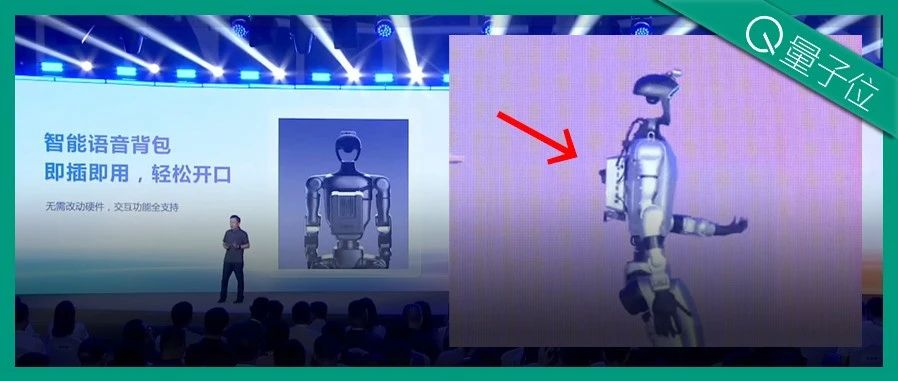

Twitter
AnthropicAI_Unveiling the Construction of Claude's Multi-Agent Research System
Published: 2025-06-13T21:01:19.000Z

Anthropic has published a new article on its engineering blog, detailing how Claude's R&D capabilities are built through the parallel collaboration of multiple agents. The article shares the successes, challenges, and engineering difficulties encountered during the development of this multi-agent research system, providing valuable insights for AI system design and optimization.
jxmnop_LLM Self-Editing and Reinforcement Learning Framework SEAL
Published: 2025-06-13T03:05:00.000Z
The tweet explores the possibility of Large Language Models (LLMs) achieving self-editing through Reinforcement Learning (RL). Jyo Pari introduces a framework called SEAL, which allows an LLM to generate its own training data (self-editing) and update its weights based on new inputs. This self-editing capability is learned via RL, using the model's downstream performance as a reward signal, heralding a new paradigm for LLM self-improvement.
TheTuringPost_ReMA: Meta-learning and RL Empowering Multi-Agent LLMs
Published: 2025-06-13T10:57:25.000Z

TuringPost introduces Reinforced Meta-thinking Agents (ReMA), a framework combining meta-learning and reinforcement learning to significantly enhance Large Language Models' (LLM) effectiveness, especially in multi-agent collaboration. ReMA divides problem-solving into meta-thinking (planning) and reasoning (execution). It utilizes a Multi-Agent Meta-thinking Reasoning Process (MAMRP) with high-level agents for meta-planning and low-level agents for reasoning, allowing dynamic plan adjustments. ReMA demonstrates notable performance improvements on both math and LLM-as-a-Judge benchmarks.
jerryjliu0_LlamaParse Launches Use-Case Presets to Enhance Document Parsing Capabilities
Published: 2025-06-13T20:48:58.000Z
Jerry Liu announced the launch of 'Use-Case Presets' for LlamaParse, a series of specialized parsing agents that can render different document types (like forms, technical documents, invoices) into predefined formats. For example, forms can be output as structured 2D tables, technical documents as XML, and invoices as line items. Additionally, LlamaParse has updated its documentation page to detail the general presets (fast, balanced, advanced) and the new use-case presets.
vipulved_Predicts End of Hand-Written Code
Published: 2025-06-13T22:08:03.000Z

Prominent technologist Vipul Ved Prakash boldly predicts that within the next 12 months, the era of hand-written code will come to an end. This statement suggests the rapid advancement of artificial intelligence in code generation, indicating that AI-assisted programming and fully automated code generation are poised to become mainstream. This shift is expected to fundamentally transform software development, prompting significant industry discussion and reflection on future programming paradigms.
GoogleDeepMind_DeepMind and Primordial Soup's Film "ANCESTRA" Debuts at Tribeca
Published: 2025-06-13T15:39:25.000Z
Google DeepMind announced the debut of "ANCESTRA," the first film from its partnership with Darren Aronofsky's Primordial Soup, at the Tribeca Film Festival. Directed by Eliza McNitt, the film integrates traditional filmmaking with DeepMind's generative video model, Veo, showcasing the potential of AI in cinematic art creation.
wechat
Official Announcement | Milvus 2.6 Officially Open-Sourced: 72% Memory Reduction, 4x Faster than ES
Published: 2025-06-13T11:21:11.000Z
Milvus 2.6 has been officially open-sourced, marking a significant milestone in its 2025 product roadmap, aiming to deliver a more efficient, powerful, and economical vector database solution. The new version introduces key improvements in cost reduction and efficiency, notably through the RaBitQ 1-bit quantization technology, achieving a substantial 72% memory reduction and significant QPS improvements. Regarding search capabilities, Milvus 2.6 enhances Analyzer/Tokenizer functionalities, adds Phrase Match, and introduces Decay Function for time-decay re-ranking, thereby improving hybrid search accuracy and timeliness. Architecturally, the update includes tiered storage for hot and cold data, a Streaming Service for real-time data processing, and support for 100k collections, significantly boosting system stability, scalability, and overall performance. Milvus 2.6 is dedicated to addressing the efficiency and stability challenges of data retrieval in the AI era, providing a robust foundation for large-scale AI applications.
iFlytek Leads the Way as Intelligent Interaction Enters True Human-Computer Interaction Era
Published: 2025-06-13T05:07:52.000Z

At its latest press conference, iFlytek unveiled a new paradigm for intelligent interaction, signaling a shift from basic command-based human-computer interaction to a deep intelligent collaboration era. Through AIUI platform upgrades and the empowerment of the Spark Interaction Large Model, iFlytek has achieved full-duplex human-like dialogue, emotional perception and empathy, human-like memory systems, and rapid response times, significantly enhancing user experience, particularly with a surge in interaction frequency in children's scenarios. Furthermore, iFlytek launched its Robot Superbrain Platform, integrating the Spark Large Model to enable multimodal perception and intelligent action, and introduced a smart voice backpack to empower existing robots. This represents more than just product feature upgrades; it's a comprehensive re-shaping of the hardware industry ecosystem with AI interaction at its core, transforming human-machine relationships from "command-execution" to "collaborative partnership," thereby accelerating the creation of a smarter intelligent world.
AI Self-Correction for Enhanced Safety in Large Reasoning Models: Achieving 'Aha-Moments' and Reducing Risk by 9.6%
Published: 2025-06-13T05:07:52.000Z
Developed by researchers from UC Santa Cruz, UC Berkeley, Cisco Research, and Yale University, the SafeKey framework addresses the limited generalization of Large Reasoning Models (LRMs) against “jailbreak” attacks. By identifying the “Key Sentence” phenomenon and “Dormant Safety Signals,” SafeKey introduces two innovative mechanisms: the “Dual-Path Safety Head” to amplify internal safety signals before key sentence generation, and “Query-Mask Modeling” to compel models to rely on their self-generated understanding for safe decisions. This framework aims to reinforce the “safety aha-moment” during key sentence generation, significantly enhancing LRM safety and robustness without impacting core capabilities. Experimental results demonstrate SafeKey's effectiveness in reducing the risk rate by 9.6%, offering an efficient and generalizable solution for secure LRM deployment.
Evaluating Image Editing Models' Reasoning Capabilities from a Knowledge Type Perspective: All Models Underperform in Procedural Reasoning
Published: 2025-06-13T05:07:52.000Z

A collaborative research team, including members from Southeast University, Max Planck Institute for Informatics, and UC Berkeley, has introduced KRIS-Bench, a groundbreaking benchmark designed to systematically evaluate the reasoning capabilities of image editing models. Uniquely, KRIS-Bench assesses models from a knowledge type perspective, categorizing challenges into factual, conceptual, and procedural knowledge. It features 22 diverse editing tasks, ranging from basic to advanced, with output scoring facilitated by multimodal large models and human calibration. Crucially, the evaluations conducted using KRIS-Bench indicate that existing image editing models, both closed and open-source, exhibit significant limitations, particularly in "procedural reasoning." This research endeavors to propel image editing models beyond simple pixel manipulation, fostering their evolution into "visual sages" capable of human-like cognitive understanding, thereby enabling them to grasp the underlying physical, chemical, and causal principles inherent in image editing tasks.
DeepSeek Engineer Open-Sources Lightweight Nano-vLLM, Achieving Near-Original Throughput with Just 1200 Lines of Code
Published: 2025-06-13T04:32:14.000Z

DeepSeek engineer Yu Xingkai has recently open-sourced Nano-vLLM, a lightweight large language model (LLM) inference engine, demonstrating a significant breakthrough in efficiency. This project remarkably achieves throughput performance comparable to the high-performance vLLM, all while being implemented with just 1200 lines of Python code. Nano-vLLM is designed to offer an easily readable and highly efficient alternative for LLM deployment, boasting core features like rapid offline inference, a remarkably concise codebase, and advanced optimization functionalities including Prefix caching, Torch compilation, and CUDA graphs. Benchmark tests, conducted on an RTX 4070 using the Qwen3-0.6B model, clearly indicate that Nano-vLLM's performance is nearly on par with the original vLLM. This innovative development provides a promising new approach and a valuable tool for optimizing LLM inference, underscoring the potential for streamlined and highly performant deep learning systems.
Unstructured Data Meetup Japan Edition: Don't Miss It on July 5th!
Published: 2025-06-13T11:21:11.000Z

The Unstructured Data Meetup Japan edition, initiated by leading vector database provider Zilliz, is scheduled for July 5th at the AWS office in Tokyo. This technical sharing event focuses on unstructured data and Generative AI, targeting developers, AI engineers, data scientists, and AI product managers. The meetup aims to foster collaboration and explore cutting-edge advancements in vector databases, large language models, AI applications, and big data. Key presentations include Zilliz's introduction to Milvus and Zilliz Cloud, SmartNews's insights into Milvus applications for search, recommendation, and content understanding, and Mercari's deep dive into AI and LLM integration within their retrieval systems, covering offline data labeling, query expansion, and embedding technologies. This gathering will facilitate the exchange of the latest developments in unstructured data and generative AI fields.
GitHub
AI Hedge Fund
Published: 2025-06-15T17:21:13Z

This project presents a robust proof-of-concept for an AI-powered hedge fund, meticulously designed to explore the advanced application of artificial intelligence in sophisticated trading decision-making. The system boasts a highly collaborative multi-agent architecture, integrating specialized AI agents focused on critical financial aspects such as disciplined valuation, market sentiment analysis, in-depth fundamental data interpretation, precise technical indicator analysis, and comprehensive risk management. Furthermore, it simulates the distinct investment philosophies of twelve renowned financial masters, offering diverse strategic perspectives. The project provides flexible deployment options via Poetry and Docker, features seamless integration with various Large Language Models (LLMs) for enhanced analytical capabilities, and includes robust backtesting functionalities for performance evaluation. Primarily intended for educational and research purposes, this sophisticated system rigorously simulates trading decisions without engaging in any actual financial transactions, emphasizing its role as a learning and development tool.
The LLM Evaluation Framework
Published: 2025-06-13T07:55:16Z

DeepEval is a robust, open-source LLM evaluation framework, akin to Pytest but specialized for large language model outputs. It incorporates the latest research to assess LLM performance across various metrics, including G-Eval, RAGAS, hallucination, answer relevancy, and conversational metrics, with evaluations running locally on your machine. This framework is crucial for validating RAG pipelines, chatbots, and AI agents, enabling developers to determine optimal models and prompts, prevent prompt drifting, and ensure application reliability. DeepEval also supports building custom metrics, generating synthetic datasets, seamless CI/CD integration, and red-teaming for over 40 safety vulnerabilities. Furthermore, it allows easy benchmarking of any LLM on popular benchmarks like MMLU and HumanEval, providing a comprehensive solution for LLM quality assurance and performance optimization throughout the development lifecycle.
All RAG Techniques: A Simpler, Hands-On Approach ✨
Published: 2025-06-13T02:13:12Z

This GitHub repository offers a practical, hands-on guide to Retrieval-Augmented Generation (RAG) techniques. It meticulously breaks down over 20 advanced RAG methods, such as semantic chunking, reranking, Graph RAG, Multimodal RAG, and Corrective RAG, all implemented from scratch using pure Python libraries like OpenAI and NumPy, without relying on frameworks like LangChain. The project aims to provide readable, modifiable, and educational code, enabling developers to grasp the fundamental workings of RAG. It also covers handling large datasets with knowledge graphs, serving as a valuable resource for building efficient and interpretable RAG systems.
Open-source Large Language Model Usage Guide
Published: 2025-06-12T08:52:13Z

This project serves as a dedicated open-source large language model tutorial for beginners in China, primarily focusing on Linux platforms. It provides comprehensive, full-process guidance covering environment setup, local deployment, and efficient fine-tuning for a wide range of open-source LLMs. The initiative aims to simplify the complex procedures of deploying, using, and applying these models, including mainstream ones like LLaMA, ChatGLM, and InternLM. Technical aspects covered include command-line invocation, online demo deployment, and integration with frameworks like LangChain. The tutorial's objective is to enable more students and researchers to effectively leverage open-source large models, fostering their adoption in academic and practical settings, and facilitating the development of customized, domain-specific LLMs.
✨ YouTube Transcript API ✨
Published: 2025-06-11T22:24:04Z

The YouTube Transcript API is a Python library designed for efficient retrieval of YouTube video transcripts and subtitles, including automatically generated ones. This API eliminates the need for headless browsers, supports subtitle translation, and offers flexible API interfaces and command-line tools. It addresses IP blocking issues by supporting proxy configurations to ensure service stability and provides various output formats. The project offers a convenient solution for video content analysis, multilingual processing, and automated data extraction.
AI Agents for Beginners - A Course
Published: 2025-06-11T11:04:34Z

This GitHub repository presents "AI Agents for Beginners - A Course," comprising 11 lessons designed to teach the fundamentals of building AI agents. The curriculum covers AI agent concepts, exploration of agentic frameworks, various agentic design patterns (such as tool use, RAG, planning, multi-agent, and metacognition), and deploying AI agents in production environments. The course provides Python code samples compatible with Azure AI Foundry and GitHub Model Catalogs, leveraging Microsoft's Azure AI Agent Service, Semantic Kernel, and AutoGen frameworks. With multi-language support, this course is ideal for beginners seeking a systematic approach to AI agent development.
huggingface
ReasonMed: A 370K Multi-Agent Generated Dataset for Advancing Medical
Reasoning
Published: 2025-06-11T08:36:55.000Z

Though reasoning-based large language models (LLMs) have excelled in
mathematics and programming, their capabilities in knowledge-intensive medical
question answering remain underexplored. To address this, we introduce
ReasonMed, the largest medical reasoning dataset, comprising 370k high-quality
examples distilled from 1.7 million initial reasoning paths generated by
various LLMs. ReasonMed is constructed through a multi-agent
verification and refinement process, where we design an Error Refiner
to enhance the reasoning paths by identifying and correcting error-prone steps
flagged by a verifier. Leveraging ReasonMed, we systematically investigate best
practices for training medical reasoning models and find that combining
detailed Chain-of-Thought (CoT) reasoning with concise answer summaries yields
the most effective fine-tuning strategy. Based on this strategy, we train
ReasonMed-7B, which sets a new benchmark for sub-10B models, outperforming the
prior best by 4.17\% and even exceeding LLaMA3.1-70B on PubMedQA by 4.60\%.
Magistral
Published: 2025-06-12T17:22:37.000Z

We introduce Magistral, Mistral's first reasoning model and our own scalable
reinforcement learning (RL) pipeline. Instead of relying on existing
implementations and RL traces distilled from prior models, we follow a ground
up approach, relying solely on our own models and infrastructure. Notably, we
demonstrate a stack that enabled us to explore the limits of pure RL training
of LLMs, present a simple method to force the reasoning language of the model,
and show that RL on text data alone maintains most of the initial checkpoint's
capabilities. We find that RL on text maintains or improves multimodal
understanding, instruction following and function calling. We present Magistral
Medium, trained for reasoning on top of Mistral Medium 3 with RL alone, and we
open-source Magistral Small (Apache 2.0) which further includes cold-start data
from Magistral Medium.
AniMaker: Automated Multi-Agent Animated Storytelling with MCTS-Driven
Clip Generation
Published: 2025-06-12T10:06:21.000Z

Despite rapid advancements in video generation models, generating coherent
storytelling videos that span multiple scenes and characters remains
challenging. Current methods often rigidly convert pre-generated keyframes into
fixed-length clips, resulting in disjointed narratives and pacing issues.
Furthermore, the inherent instability of video generation models means that
even a single low-quality clip can significantly degrade the entire output
animation's logical coherence and visual continuity. To overcome these
obstacles, we introduce AniMaker, a multi-agent framework enabling efficient
multi-candidate clip generation and storytelling-aware clip selection, thus
creating globally consistent and story-coherent animation solely from text
input. The framework is structured around specialized agents, including the
Director Agent for storyboard generation, the Photography Agent for video clip
generation, the Reviewer Agent for evaluation, and the Post-Production Agent
for editing and voiceover. Central to AniMaker's approach are two key technical
components: MCTS-Gen in Photography Agent, an efficient Monte Carlo Tree Search
(MCTS)-inspired strategy that intelligently navigates the candidate space to
generate high-potential clips while optimizing resource usage; and AniEval in
Reviewer Agent, the first framework specifically designed for multi-shot
animation evaluation, which assesses critical aspects such as story-level
consistency, action completion, and animation-specific features by considering
each clip in the context of its preceding and succeeding clips. Experiments
demonstrate that AniMaker achieves superior quality as measured by popular
metrics including VBench and our proposed AniEval framework, while
significantly improving the efficiency of multi-candidate generation, pushing
AI-generated storytelling animation closer to production standards.
VRBench: A Benchmark for Multi-Step Reasoning in Long Narrative Videos
Published: 2025-06-12T16:17:17.000Z

We present VRBench, the first long narrative video benchmark crafted for
evaluating large models' multi-step reasoning capabilities, addressing
limitations in existing evaluations that overlook temporal reasoning and
procedural validity. It comprises 1,010 long videos (with an average duration
of 1.6 hours), along with 9,468 human-labeled multi-step question-answering
pairs and 30,292 reasoning steps with timestamps. These videos are curated via
a multi-stage filtering process including expert inter-rater reviewing to
prioritize plot coherence. We develop a human-AI collaborative framework that
generates coherent reasoning chains, each requiring multiple temporally
grounded steps, spanning seven types (e.g., event attribution, implicit
inference). VRBench designs a multi-phase evaluation pipeline that assesses
models at both the outcome and process levels. Apart from the MCQs for the
final results, we propose a progress-level LLM-guided scoring metric to
evaluate the quality of the reasoning chain from multiple dimensions
comprehensively. Through extensive evaluations of 12 LLMs and 16 VLMs on
VRBench, we undertake a thorough analysis and provide valuable insights that
advance the field of multi-step reasoning.
Ming-Omni: A Unified Multimodal Model for Perception and Generation
Published: 2025-06-11T02:50:49.000Z

We propose Ming-Omni, a unified multimodal model capable of processing
images, text, audio, and video, while demonstrating strong proficiency in both
speech and image generation. Ming-Omni employs dedicated encoders to extract
tokens from different modalities, which are then processed by Ling, an MoE
architecture equipped with newly proposed modality-specific routers. This
design enables a single model to efficiently process and fuse multimodal inputs
within a unified framework, thereby facilitating diverse tasks without
requiring separate models, task-specific fine-tuning, or structural redesign.
Importantly, Ming-Omni extends beyond conventional multimodal models by
supporting audio and image generation. This is achieved through the integration
of an advanced audio decoder for natural-sounding speech and Ming-Lite-Uni for
high-quality image generation, which also allow the model to engage in
context-aware chatting, perform text-to-speech conversion, and conduct
versatile image editing. Our experimental results showcase Ming-Omni offers a
powerful solution for unified perception and generation across all modalities.
Notably, our proposed Ming-Omni is the first open-source model we are aware of
to match GPT-4o in modality support, and we release all code and model weights
to encourage further research and development in the community.
Optimus-3: Towards Generalist Multimodal Minecraft Agents with Scalable
Task Experts
Published: 2025-06-12T05:29:40.000Z

Recently, agents based on multimodal large language models (MLLMs) have
achieved remarkable progress across various domains. However, building a
generalist agent with capabilities such as perception, planning, action,
grounding, and reflection in open-world environments like Minecraft remains
challenges: insufficient domain-specific data, interference among heterogeneous
tasks, and visual diversity in open-world settings. In this paper, we address
these challenges through three key contributions. 1) We propose a
knowledge-enhanced data generation pipeline to provide scalable and
high-quality training data for agent development. 2) To mitigate interference
among heterogeneous tasks, we introduce a Mixture-of-Experts (MoE) architecture
with task-level routing. 3) We develop a Multimodal Reasoning-Augmented
Reinforcement Learning approach to enhance the agent's reasoning ability for
visual diversity in Minecraft. Built upon these innovations, we present
Optimus-3, a general-purpose agent for Minecraft. Extensive experimental
results demonstrate that Optimus-3 surpasses both generalist multimodal large
language models and existing state-of-the-art agents across a wide range of
tasks in the Minecraft environment. Project page:
https://cybertronagent.github.io/Optimus-3.github.io/